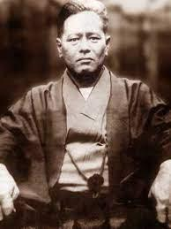

Chojun Miyagi was born on 25th April 1888 in Okinawa. At the age of five, he became the heir to the Miyagi family. His karate training began at age 11 under Ryuko Aragaki Sensei, who practiced and taught Tomari-Te. When he was fourteen, his teacher introduced him to Higaonna Kanryo Sensei. Chojun Sensei trained with Kanryo Sensei from 1902 until October 1916, when Kanryo Sensei passed away.
During this time he was one of the few people who could withstand the severe training given by Kanryo Sensei. After the death of his teacher, Chojun Sensei continued with his own development including trips to China and research into physiology. Chojun Sensei was instrumental in registering Karate at the Butokukai in Japan. He developed the Junbi-undo we practice today, and introduced the basic kata Gekisai Dai Ichi and Dai Ni. He also developed Tensho and a revised version of Sanchin. In addition to his personal training and development of Naha-te, Chojun Sensei spent a great deal of his time promoting the art.
In 1921, he performed a demonstration of Naha-te in Okinawa for the visiting Prince Hirohito, Emperor of Japan, and in 1925 for Prince Chichibu. Chojun Sensei had already envisioned the development of Naha-te not only in Japan but also around the world. It became increasingly important to organize and unify Okinawan karate as a cultural treasure to be passed on to future
Chojun Sensei travelled extensively, spreading Goju-Ryu to mainland Japan and as far afield as Hawaii after a local Hawaiian newspaper company invited him to introduce and promote karate in Hawaii in 1934. Two years later Chojun Sensei spent two months in Shanghai, China, for further study of Chinese martial arts. He attended the "Meeting of Okinawan Masters" in Oct. 25th, 1936 to discuss the re-naming of Tote-jutsu to Karate-do. In 1937, he was awarded a commendation by the Butoku-kai for his kata. Chojun Sensei continued to develop Goju-Ryu by analysing and employing scientific methods of exercise in his research. His work found many practical applications and it is no surprise to learn that many of his students were in the police force.
At this point the Second World War interceded, and the aftermath led to a prolonged period of severe hardship in Okinawa. Not surprisingly, the few students who survived the conflict could no longer train. Of those that lost their lives during the war, was Chojun Sensei's top student Shinzato Jin'an, who was to have succeeded him.
As normal life returned again to Okinawa in the aftermath of the war, Chojun Sensei began teaching again in his garden dojo. Realizing that he had so much knowledge to pass on, Chojun Sensei began grooming a new and promising young student called Anichi Miyagi (no relation) to succeed him. They trained on a one to one basis similar to the method he was trained by Kanryo Sensei.
Sadly Chojun Sensei passed away on 8th October 1953 as a result of heart disease. His death at only 65 years of age and the devastation of WWII meant the style of Goju-ryu was now left in the hands of a young man, Anichi Miyagi. Chojun Miyagi's essence and influence can be found today in Dojo's in nearly every country of the world. His vision of Goju-ryu spreading worldwide was realized just as he had foreseen. Miyagi was also a close friend of Hisataka Kori, and the two practiced together quite regularly.